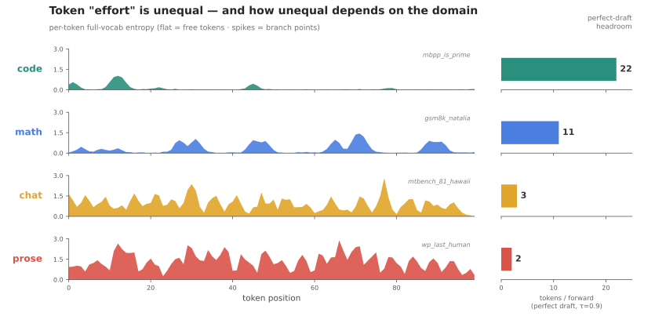
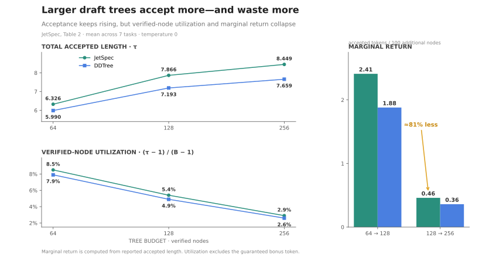

How to Train a Draft Model: Speculative Decoding, Verify, and Why Longer Isn’t Better
An English translation of SuSun’s article on speculative decoding in OpenInfer.
Thanks to the friends on the openinfer team for their support — we wrote openinfer’s speculative decoding code and this blog together.
We have already added support for DFlash and DSpark speculative decoding on OpenInfer[1] with Qwen3-4B. In a ShareGPT test on a single RTX 5090, DSpark raised single-stream throughput from 170 to 381 token/s, and brought TPOT down from 5.83 ms to 2.96 ms; at concurrency 4, throughput likewise rose from 576 to 1288 token/s — all while keeping the output lossless.
This article breaks down the speculative decoding technique itself: how the draft model is trained, why neither the draft nor the verify is “the longer the better”, and how the latest DSpark does dynamic verify.
Large-model decode is limited by memory bandwidth: for every token emitted, the full set of weights has to be read from VRAM once. For an 8GB dense model with 800GB/s of bandwidth, one full read is 10ms, so the per-request ceiling is 100 token/s.
This ceiling has nothing to do with how many requests there are or how complex they are, and it doesn’t have much to do with how well the kernels are written either — bandwidth utilization cannot exceed the physical limit, and a single forward simply has to read that much data. If you want to go faster, there is only one way: make a single decode forward emit more than one token.
Why can an LLM decode forward only emit one token?
Mainstream LLMs are decoder-only Transformers with a causal attention mask: each position can only see itself and the tokens to its left, and the entire model’s training objective is “given the text, predict the next token.”
So within one forward pass, the only position that actually produces something new is the last one in the sequence — it yields the distribution for the next token, the sampled token is appended to the end of the sequence, and only then can the next forward begin. Each output depends on the previous step’s output — inherently serial.
Here’s an intuition: the “effort” the model spends on each output token is actually not uniform. For example, when it’s writing Rust, the first token after a newline is “l” (of course the tokenizer may not split that finely), the next is very likely “e”, then “t”, then a space:
let a = 1; let b = 2;
Is there some way to recognize such patterns and guess in advance what the model is likely to output next? The precondition is unchanged precision: after the model receives these hints, the final output must still be identical to the original model’s.
The simple idea is: before some decode step, use some mechanism to generate a handful of follow-up tokens and hand them to the model for verification. If the model accepts 3 tokens, that’s equivalent to one decode forward generating 3 tokens.
Temporarily ignoring the extra overhead of the draft stage and the verify stage, that would mean generating 3 tokens per 10ms — close to 3× the throughput, taking single-request tps from 100 token/s to 300 token/s.
How do we approximately measure how hard a token is to output?
The model fundamentally outputs logits, not tokens directly. After normalization, the logits can be read as the model’s probability of choosing each word — for instance {"a": 0.99, "b": 0.01} means the model has a very strong preference for the token “a” (though this cannot be directly equated with difficulty). If “a” and “b” are each at 0.5, the model doesn’t really know what to output — there’s some hesitation.
We compute the entropy of the logits at every output position, \(H = -\sum_i p_i \log p_i\). This metric roughly represents “average uncertainty” — the smaller it is, the more certain the model likely is.
Taking Qwen3 4B as the example, we collect the logits produced while the model generates under a set of prompts and watch how the entropy changes at each output token.
To clarify once more: I don’t claim the “entropy” here is equivalent to how difficult the model finds it to output a token, but the two should be correlated.
Let’s look at four typical workloads.
coding comes from HumanEval; example prompts:
Complete the body of this Python function. Output only the function. def has_close_elements(numbers: List[float], threshold: float) -> bool: … (with docstring + doctest — standard OpenAI code completion)
Write a Python function is_prime(n) that returns True if n is a prime number and False otherwise.
math comes from GSM8K:
Natalia sold clips to 48 of her friends in April, and then she sold half as many clips in May. How many clips did Natalia sell altogether in April and May?
prose source: r/WritingPrompts. Famous works are deliberately avoided so the model can create freely.
Write a short story based on this writing prompt: You are the last human alive on Earth. Suddenly, you hear a knock on the door.
chat source: MT-Bench Q81 + the first Alpaca instruction.
Compose an engaging travel blog post about a recent trip to Hawaii, highlighting cultural experiences and must-see attractions.
We then let Qwen3 4B generate greedily, and at every generated token we record the full-vocabulary logits and compute the entropy.
Before showing the full analysis, let’s first look at a concrete example from the math domain. The problem is:
Natalia sold clips to 48 of her friends in April, and then she sold half as many clips in May. How many clips did Natalia sell altogether in April and May?
The model’s reply looks like this:
Natalia sold clips to **48 friends** in **April**.
In **May**, she sold **half as many** clips as in April:
$$
\frac{48}{2} = 24
$$
So, in **May**, she sold **24 clips**.
Now, add the number of clips sold in both months:
$$
48 + 24 = 72
$$
**Answer:** Natalia sold **72 clips** altogether in April and May.We pull out the first sentence, “Natalia sold clips to 48 friends in April.”, and look at each token’s entropy in generation order (larger H = more hesitant; p1 is the top-1 probability):
'N' H=0.244 p1=0.946 # restate the problem first, or not? 'atal' H=0.000 p1=1.000 # restating begins — entropy very low 'ia' H=0.000 p1=1.000 ' sold' H=0.000 p1=1.000 ' clips' H=0.050 p1=0.991 ' to' H=0.000 p1=1.000 ' **' H=0.315 p1=0.905 # bold the number, or not? '4' H=0.000 p1=1.000 # emit the number '8' H=0.000 p1=1.000 ' friends' H=0.040 p1=0.993 '**' H=0.074 p1=0.986 ' in' H=0.000 p1=1.000 ' **' H=0.269 p1=0.924 # still has to bold 'April' H=0.000 p1=1.000 # repeating the problem text '**' H=0.002 p1=1.000 '.\n\n' H=0.040 p1=0.993
For most structural output — plainly restating the problem, restating numbers — once the model has decided on the restatement and the format, the subsequent output is highly determined and the entropy is very low.
This means we can most likely use a small model to maintain fairly high accuracy at these low-entropy positions, guessing several tokens at a time, and thereby let the main model emit multiple tokens in a single forward.

The left figure shows how entropy evolves while the model generates its reply on the four workloads. code and math have lower entropy — more determined output; chat and prose are more diffuse. This suggests we can probably capture pretty good gains in the code and math scenarios.
The right side is the ideal speedup. We mark an output token with top1_prob > 0.9 as “the model is very certain”, and find consecutive runs of such tokens. For instance tokens 48 → 72 form a run of 24 consecutive certain tokens, meaning we could draft 24 tokens out for the model to verify. In the coding and math scenarios this count is large; under chat and prose it’s only 3 and 2 — but these are just relative values.
The experiment above validates one thing: in the code and math scenarios there really is a lot of low-difficulty output that a small model can guess correctly.
But guessing is guessing — how exactly do we guarantee accuracy? How do we guarantee losslessness?
Greedy decoding
Let’s start from greedy decoding, i.e. sampling always picks the token with the highest probability.
Verification under greedy is simple and deterministic: the target model \(M\) takes the argmax throughout, so there exists a single, uniquely determined “reference answer” sequence — precisely the string of tokens \(M\) would greedily emit step by step on its own.
Spec decode being “lossless” under greedy means the output matches this reference sequence token for token — only the number of \(M\)’s forwards goes down.
Let’s work from a concrete example. Suppose the current context is \(x_{1:t}\). In the draft stage, we use the small model \(q\) to autoregressively emit \(\gamma\) candidates \(d_1, \ldots, d_\gamma\) — that’s \(\gamma\) small-model forwards, a small cost. In the verify stage, we feed the whole sequence \([x_{1:t}, d_1, \ldots, d_\gamma]\) into \(M\) and run just one forward.
Why can a single forward give us the verify for multiple positions? We’re exploiting the causal mask mechanism. The causal mask dictates that position i can only see 1..\(i\) — it cannot see the future. Technically, the attention weights pointing to the future are pushed down to \(-\infty\) (0 after softmax).
So we can stuff multiple draft tokens in at once. Every position’s output depends only on itself and the tokens to its left; with the mask in place, each token’s computation is no different from normal decode.
For example, with 4 drafted tokens, this forward is like processing 5 decode positions in parallel along the sequence dimension. Put another way, this single forward computes \(\gamma + 1\) distributions in parallel and in isolation along the sequence — the hidden state at each draft token’s position is predicting its own next token:
fed in: x_{1:t} d1 d2 d3 d4
| | | | |
predict next: p0 p1 p2 p3 p4 ← one forward, 5 distributionsThe key is that \(p_i = M(\cdot \mid x_{1:t}, d_1..d_i)\) is \(M\)’s true conditional distribution — no loss of any kind. The mask makes \(p_i\) attend only to \(x\) and \(d_1..d_i\), so it is exactly “the next-token distribution \(M\) would give if it had really been fed this prefix.” The verify step involves no approximation whatsoever: within a single forward, \(M\) has computed its true argmax at every position. That is where losslessness comes from.
The acceptance rule is equally simple: walk through the sequence, comparing until the first mismatch.
Using the earlier Rust example: the context stops at the newline, and \(M\)’s true greedy continuation is let ␣a ␣= ␣1 ; while the draft (\(\gamma = 4\)) guessed let ␣a ␣= ␣2.
let ␣a ␣= — all three hit; at ␣2 we find a mismatch, because the model chose 1, not 2. So we accept the first 3, then take ␣1 as an extra bonus (it has already been forwarded, and it is the correct choice) — so this round emits let ␣a ␣= ␣1: 4 tokens / 1 forward.
Therefore, the correctness of verification is completely independent of where the draft came from. Whether \(d_1..d_\gamma\) came from small-model greedy, small-model sampling, n-gram copying from the context, or random tokens — none of it affects output correctness; it only affects the acceptance rate \(\alpha\).
But once we add sampling — say top-k, top-p — verification gets a bit thornier, because there is more than one legal output. Our definition of “lossless” probably has to become: whether speculative decoding is on or off is imperceptible at the user level; over many repeated generations, the two output distributions should be identical.
For instance with top_k=2, either “a” or “b” could be a legal output. But if the draft only ever offers “b” and we accept it blindly because it’s legal, we lose the randomness that sampling grants the model itself.
In other words, if speculative decoding and sampling are both enabled and we generate many replies for the same request, the distribution of those replies is not equivalent to the base model’s own sampling results.
So how do we solve this problem?
The first solution comes from DeepMind’s paper Accelerating Large Language Model Decoding with Speculative Sampling[2].
The intuition of this scheme is actually not complicated. The draft keeps proposing tokens according to its own distribution \(q\), but what we really want is the target’s distribution \(p\). For each concrete token, we look at just two things: the frequency at which the main model wants it, \(p\), and the frequency at which the draft proposes it, \(q\).
If the draft proposes it less often than the main model wants (\(q < p\)): easy — every time it proposes, we accept, and the remaining shortfall (\(p - q\)) we make up ourselves.
Conversely, if the draft proposes it more often than we want (\(q > p\)): accepting every one would definitely be “lossy”. So each time it’s proposed, we keep it only with probability \(p/q\) — which adds up to exactly \(p\).
In mathematical terms it goes like this.
For a given item \(x\), there are only two quantities:
- \(p\) = the standard amount — the proportion we want.
- \(q\) = the machine amount — the proportion the auto-restocking machine habitually piles up.
The key identity, in one line:
$$\underbrace{\min(p, q)}_{\text{overlap}} + \underbrace{(p - q)_+}_{\text{shortfall}} = p$$- Overlap \(\min(p, q)\): the smaller of the two — the part the machine can supply that I also happen to want.
- Shortfall \((p - q)_+\): the subscript \(+\) means negatives are zeroed out — the part I still want but the machine didn’t stock enough of.
Why must it hold?
- The machine understocks (\(p > q\)): I take everything the machine stocked (overlap = \(q\)), and I make up the difference myself (shortfall = \(p - q\)); together that’s exactly \(p\).
- The machine overstocks (\(p < q\)): I have enough — I take only as much as I need (overlap = \(p\)), nothing is missing, so shortfall = 0, and the total is still \(p\). The machine’s excess isn’t part of this identity — it’s the portion that gets probabilistically rejected at delivery and never reaches the shelf.
There is another, more engineering-flavored approach — and it’s what OpenInfer does now: first let the main model sample a token according to its own sampling, then compare it with the token the draft gave; if they’re the same, accept; if different, discard.
Doing it this way slightly affects the acceptance rate, but the measured impact is small. Unless the sampling parameters are very “open”, most of the time the model’s output concentrates on a small number of tokens — close to greedy.
But this depends on the actual workload and the actual MTP, including the sampling parameters received in real serving.
How to train a draft model: EAGLE as the example
The traditional, or rather naive, approach works on tokens — like a pure function: given a token list, output a token list, predicting at the token level. This is intuitive, but the acceptance rate isn’t very high.
EAGLE initially used the hidden state right before the logits, plus the token embedding shifted forward by one time step (that is, the token actually sampled at the previous step), as the draft model’s input.
The body is a single-layer autoregressive Transformer. It directly predicts hidden states, and afterwards still uses the main model’s lm_head to complete the hidden → logits → token conversion.
That makes training simple too: run the target LLM over training text, collect hidden states, and construct training samples. Here you can choose to run the target LLM’s prefill over a real text corpus to obtain hidden states, or let it generate answers and use the decode-stage hidden states as training data.
According to the EAGLE paper, generating with a fixed dataset (where the answers also come from the dataset) already achieves a 2.78× speedup; swapping the answers for ones the target generates itself achieves 2.88× — an improvement, but not a big one.
The loss function is defined like this:
L = L_reg + 0.1 * L_cls L_reg = SmoothL1(f, f̂) L_cls = CE(p, p̂) = - Σ_k p[k] * log(p̂[k])
The former guarantees the accuracy of the hidden state prediction; the latter keeps the draft model’s and target model’s token distributions close. Both serve the same purpose: raising the acceptance rate. I feel the loss here wasn’t defined from first principles — which is also one of the motivations behind the later EAGLE-3.
There’s still another problem here: the draft generates a single chain — tokens 1, 2, 3, 4. If token 1 gets rejected, then 2, 3, 4 are wasted too. We can guess multiple tokens per position and generate a tree — i.e., multiple chains — which improves the chance of acceptance; see this explainer[3].
Although tree-based drafting can push the accepted length very high and can substantially raise throughput at small batch sizes, a bigger tree is not always better: in JetSpec[4], when the budget goes from 128 to 256, the accepted tokens gained per 100 additional verified nodes drop by about 81% compared with the previous tier.

EAGLE-3 takes hidden states from three layers at once — \(l, m, h\) — and then uses a fully connected layer to reduce them to a “single layer”, obtaining a feature that integrates information from different levels. At the same time, EAGLE-3’s training objective looks only at the token distribution, which makes EAGLE-3 easier to scale.
You can also swap this draft for a diffusion model that generates multiple tokens at once — for example DFlash[5], which is the DFlash that OpenInfer integrates.
Calculating the gains of speculative decoding
Suppose the draft generates \(\gamma\) tokens per round, and each position is accepted with probability \(\alpha\).
The first token brings \(\alpha\) expected output; the second is only useful if the first two are both accepted, contributing \(\alpha^2\); the \(i\)-th contributes \(\alpha^i\).
Moreover, no matter where the draft fails, the target always yields one corrected token. So the expected output of one verify round is
$$\mathbb{E}(n) = 1 + \alpha + \alpha^2 + \cdots + \alpha^\gamma = \frac{1 - \alpha^{\gamma+1}}{1 - \alpha}.$$Put simply: the longer the draft, the harder the later tokens are to accept. Each additional draft token only adds \(\alpha^\gamma\) of expected output.
As \(\gamma \to \infty\), the total output only approaches \(1/(1 - \alpha)\). For example, at \(\alpha = 0.5\), no matter how long the draft is, a round averages no more than 2 tokens; only at \(\alpha = 0.9\) does the ceiling rise to 10.
How many tokens a round produces still can’t be directly equated with how much speedup we get, because generating the draft and verifying both take time.
Let the time for normal decode to generate one token be 1, let the draft model’s relative cost to generate one token be \(c\), and let the relative cost of verifying \(\gamma + 1\) positions at once be \(v_\gamma\). Then one round of speculative decoding costs \(\gamma c + v_\gamma\) units of time.
In the same amount of time, normal decode could generate \(\gamma c + v_\gamma\) tokens, while speculative decoding generates \(\mathbb{E}(n)\) on average. So the speedup ratio is approximately
$$S(\gamma) \approx \frac{\mathbb{E}(n)}{\gamma c + v_\gamma} = \frac{1 + \alpha + \cdots + \alpha^\gamma}{\gamma c + v_\gamma}.$$- OpenInfer
- DeepMind, Accelerating Large Language Model Decoding with Speculative Sampling
- Explainer on tree-based drafting
- JetSpec
- DFlash
Translation ends here — the captured pages stop at the speedup formula. The original article continues (the intro promises coverage of how DSpark does dynamic verify).